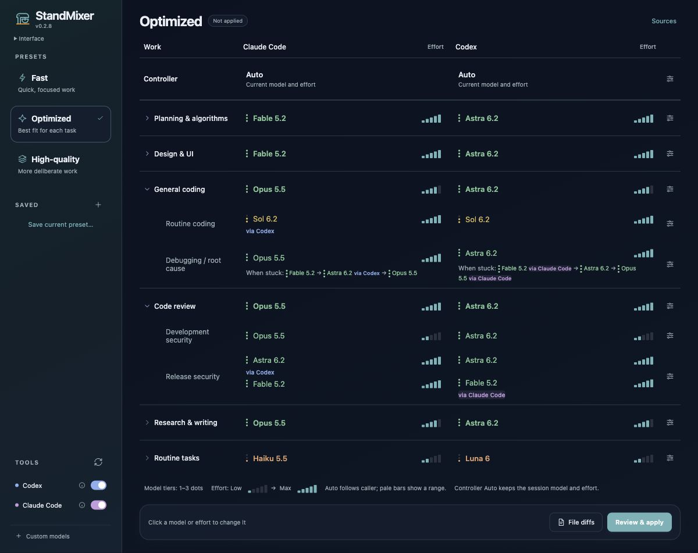

Make Claude and Codex
work together.
Apply Optimized to get started. One preset sets up Claude and Codex together—no configuration needed. Customize six work groups, with direct model and effort editing and optional overrides.
Install StandMixer
Requires macOS 14+, Git, and an installed Claude Code or Codex CLI. A CLI bundled with a supported desktop app works too.
git clone https://github.com/drydockbuild/standmixer.git && sh standmixer/install.sh
/standmixer in Claude Code
Native pane, with web and Mac options.
$standmixer in Codex
Full web UI inside Codex, with a Mac option.

Optional Mac app
Choose Mac app from the Interface menu, or run /standmixer install-mac in Claude Code or $standmixer install-mac in Codex.
The app is built and signed locally. Once installed, the same menu opens it.
Requires Apple Command Line Tools with Swift 6 or later and a suitable macOS SDK. Full Xcode is not required. If the tools are missing, run xcode-select --install, finish Apple’s installation, and retry. There is no DMG.
Remove StandMixer settings
Run /standmixer uninstall to preview restoring the original managed settings. Later edits are preserved. You can also choose Remove StandMixer settings in Sources.
Disable or uninstall the plugin separately in Claude Code’s or Codex’s plugin manager. Saved presets, backups, the source checkout, and the optional Mac app remain.